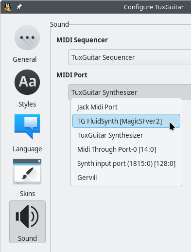

First of all, it is important to mention that TuxGuitar is written in the Java programming language. Therefore, the audio output methods are heavily depending on Java. There is a dedicated layer in Java for MIDI sound, which uses "soundbanks". A soundbank is a file that contains sound samples for all the required instruments.
In TuxGuitar prior to version 1.0, using the soundbanks was the only way to play the sound, and it was totally independent of your system MIDI settings.
Since version 1.0, TuxGuitar includes several operating system dependent plugins that allow audio output over the system's MIDI devices. The appropriate plugins are included in the distribution packages for the various operating systems, so you don't need to install them manually. By default, the plugin best suited for your operating system is activated, but you can switch to another one in the plugin dialog, if you want to use some special output functions.
Sound settings
In the Tools → Settings → Sound dialog, you can select the MIDI Sequencer, i.e. the pice of software that extracts the MIDI events from all tracks stored in TuxGuitar and combines them into the currently played MIDI sequence, a list of time-stamped MIDI data. This sequence is then sent to the MIDI Port, where it is converted into the actual audio stream by combining the MIDI events with the sound samples extracted from the soundbank file or from other sources. The audio stream can also be further processed, mixed, etc., and is finally output to the loudspeakers.
Audio Output Plugins
The MIDI sequencers and MIDI ports are provided by Audio Output Plugins. To find all output plugins supported on your operating system, type "output" in the search field on top of the Tools → Plugins dialog:

The images above show all available audio output plugins on Linux, Windows, macOS and FreeBSD.
In the the tables below you can see the MIDI sequencers and ports provided by the plugins and the default output settings for each OS.
| Output Plugins on Linux | ||
| Plugin name | MIDI Sequencer | MIDI Port |
| TuxGuitar Synthesizer | TuxGuitar Sequencer* | TuxGuitar Synthesizer |
| Java Sound API | Real Time Sequencer | Gervill |
| FluidSynth | - | TG FluidSynth [SF-file] |
| Jack Audio Connection Kit | Jack Sequencer | Jack Midi Port |
| ALSA | - | Midi Through Port-0 [14:0] Synth input port (1610:0) [128:0] |
| Output Plugins on Windows | ||
| Plugin name | MIDI Sequencer | MIDI Port |
| TuxGuitar Synthesizer | TuxGuitar Sequencer* | TuxGuitar Synthesizer |
| Java Sound API | Real Time Sequencer | Gervill Microsoft MIDI Mapper Microsoft GS Wavetable Synth |
| FluidSynth | - | TG FluidSynth [SF-file] |
| Jack Audio Connection Kit | Jack Sequencer | Jack Midi Port |
| WinMM | - | Microsoft GS Wavetable Synth |
| Output Plugins on macOS | ||
| Plugin name | MIDI Sequencer | MIDI Port |
| TuxGuitar Synthesizer | TuxGuitar Sequencer* | TuxGuitar Synthesizer |
| Java Sound API | Real Time Sequencer | Gervill |
| macOS Audio Unit | - | AudioUnit graph midi playback |
| Output Plugins on FreeBSD | ||
| Plugin name | MIDI Sequencer | MIDI Port |
| TuxGuitar Synthesizer | TuxGuitar Sequencer* | TuxGuitar Synthesizer |
| Java Sound API | Real Time Sequencer | Gervill |
| FluidSynth | - | TG FluidSynth [SF-file] |
Bold Plugin name: Plugin is activated by default
Bold MIDI Sequencer/Port: Default sound output
Some MIDI ports are automatically detected by the OS and may differ on your system.
The TuxGuitar Sequencer* is built-in and always available, even if no plugin is enabled. There is no built-in MIDI port, all MIDI ports are provided via plugins.
Beside the TuxGuitar Synthesizer output plugin there are other TuxGuitar Synthesizer plugins available. These plugins depend on the TuxGuitar Synthesizer output plugin and do not add any MIDI sequencer or port, but provide other features.
Java Sound
The Java Sound plugin, relying on a SF2 soundbank file, is still available in the form of the "Java Sound API output plugin" on all supported desktop operating systems. You can change the soundbank with the "Configure" button in the plugins dialog:

If the plugin is enabled, in the Sound tab of the Tools → Settings dialog you can choose the Real Time Sequencer as MIDI Sequencer and the MIDI Port called "Gervill".
Platform-dependent Output Plugins
If you have the TuxGuitar ALSA plugin enabled on Linux or if you are running TuxGuitar on the Windows platform, TuxGuitar detects your system MIDI ports (devices) automatically.
So it depends on your system settings, but anyway, if the proper plugin is enabled and working you should see the system ports in the MIDI Port list in the Sound tab of the Tools → Settings dialog. Choosing the right one enables your native MIDI sound in TuxGuitar.